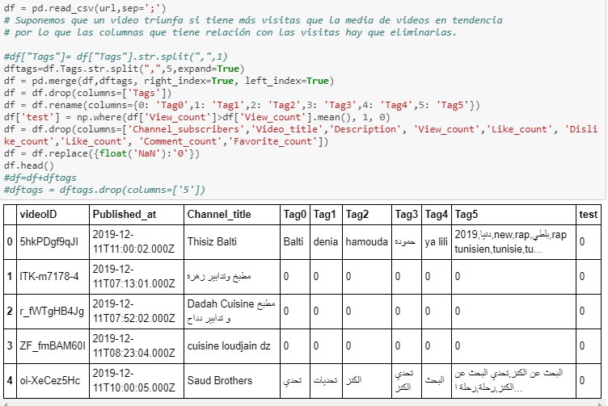
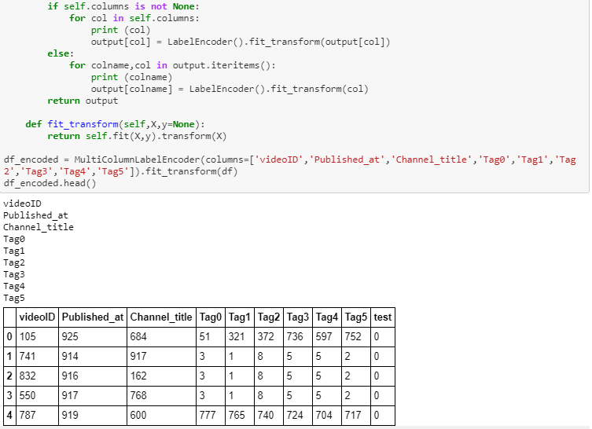
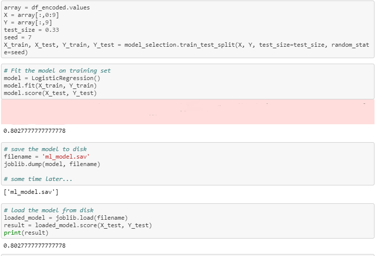

Al principio, los videos tenian este tipo de datos: videoID, Published_at, Video_title, Description, Channel_title, Channel_subscriber, View_count, Like_count, Dislike_count, Favorite_count, Comment_count
Renombramos las columnas que nos interesan y las que no, las eliminamos (df.drop) ya que unos causan errores y otras no darían un encoder común para que nos fueran válidos
Una vez que tenemos las columnas que nos interesa, procedemos a hacer el encoder a todas las columnas, para que así se transformen en números. La última columna nos dice 0 si no fue tendencia, 1 si sí lo fue
Trás tener todas esas columnas numéricas, procedemos a utilizar el algoritmo LogisticRegression() el cual nos concede un 80% de acierto tras su aprendizaje.
Guardamos el modelo para poder utilizaralo en los próximos videos y así poder predecirlos si van a marcar tendencia o no